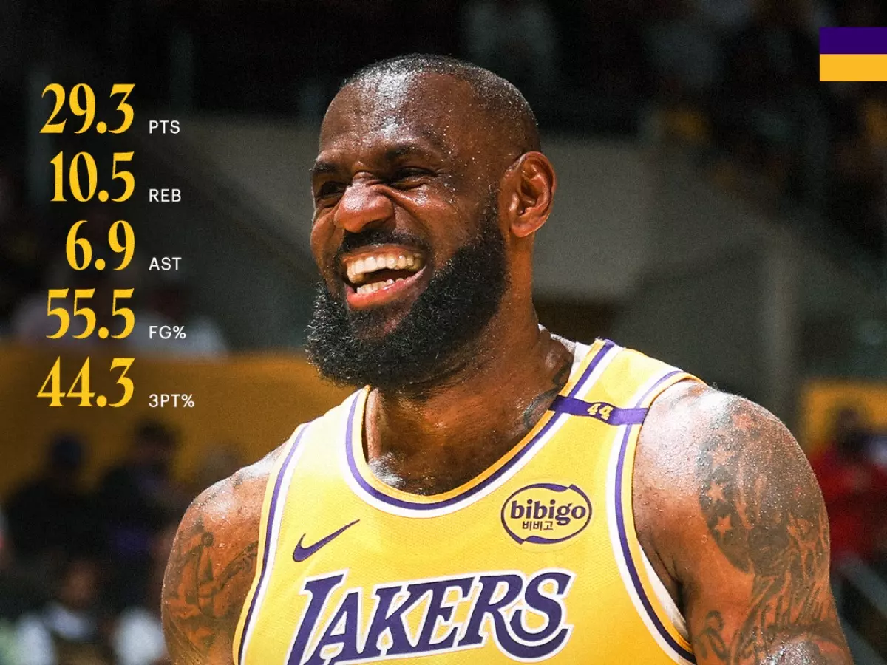

LeBron James, the American basketball power forward, makes history, becoming the first NBA player to make 50,000 points. The 40-year-old player has consistently delivered unprecedented victories during his career span.

LeBron James has made history by becoming the first NBA player to surpass 50,000 combined points in
regular-season and playoff games. This milestone was achieved during the Los Angeles
Lakers' 136-115 victory
over the New Orleans Pelicans, where James scored 34 points.
Entering the game, James needed just one point to reach the 50,000-point mark. He
accomplished this early in the
first quarter with a three-pointer from the left wing, assisted by teammate Luka
Doncic. This achievement
further cements James' legacy as the NBA's all-time leading scorer in both regular-season and postseason
play.
At 40 years old and in his 22nd NBA season, James continues to perform at an
exceptional level. In February, he
averaged 29.3 points, 10.5 rebounds, and 6.9 assists, leading the Lakers to a 10-2 record for
the month. His
sustained excellence underscores his remarkable durability and skill.
James' career has been marked by numerous accolades, including four NBA championships with three different
teams— the Miami Heat (2012-2013), Cleveland Cavaliers (2016), and Los Angeles Lakers (2020) . In 2023, he
surpassed Kareem Abdul-Jabbar's longstanding record to become the NBA's all-time leading scorer.